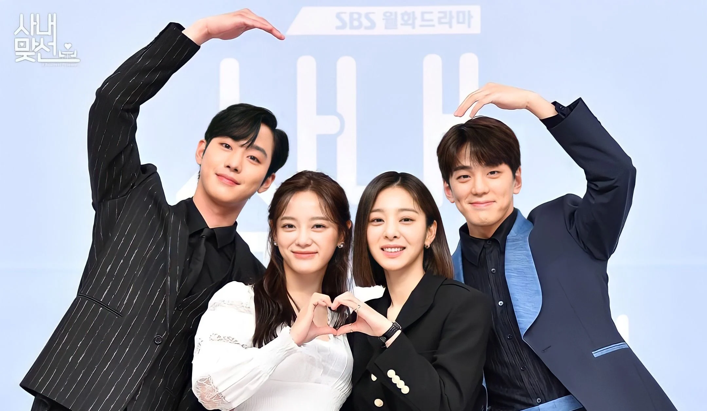

Business Proposal
Business Proposal is a romantic comedy K-drama that blends humor, workplace dynamics, and heart-fluttering romance in a lighthearted way. The story follows Shin Ha-ri, an office worker who goes on a blind date pretending to be her friend—only to discover that her date is none other than her company's handsome CEO, Kang Tae-moo. What follows is a delightful rollercoaster of fake dating, misunderstandings, and slowly blooming love. With strong chemistry between the lead actors, charming side couples, and plenty of comedic moments, *Business Proposal* is an entertaining and feel-good series perfect for fans of rom-coms. It's not just about romance—it also highlights friendship, ambition, and staying true to oneself.